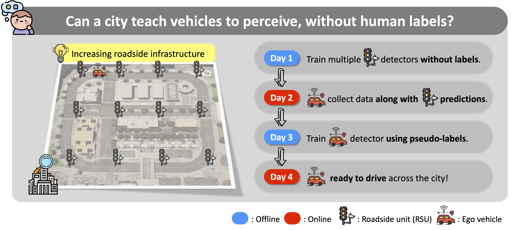

When the City Teaches the Car: Label-Free 3D Perception from Infrastructure
European Conference on Computer Vision (ECCV), 2026. * indicates equal contribution.
DriveX @ CVPR 2026 — Best Poster Award 🏆
In this paper, we present CIVET, a novel framework that leverages infrastructure-mounted LiDAR to enable label-free 3D perception for autonomous vehicles.